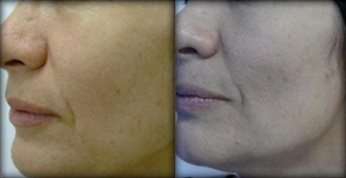
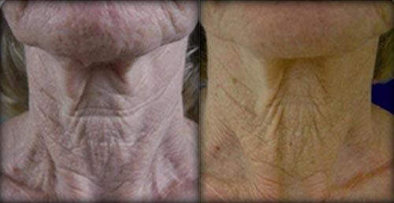

Ultrazvok za obraz
Ciljno delovanje na izbrane predele obraza, podbradka in vratu.

Ultrazvok · radiofrekvenca · tonus kože
Neinvazivna estetska obravnava za bolj svež videz obraza, podporo tonusu kože, obraznim linijam in predelu podbradka.
Quantum Health
Pomlajevanje obraza združuje ultrazvočni pristop in bipolarno radiofrekvenco. Namen obravnave je boljša napetost kože, lepša tekstura, podpora obraznim linijam in bolj urejen videz.
Ciljno delovanje na izbrane predele obraza, podbradka in vratu.
Podpora napetosti kože, kolagenu, tonusu in bolj gladkemu videzu.
Neinvaziven postopek brez večjih priprav, bolečin ali dolgega okrevanja.
Postopek
S pomočjo ultrazvoka se obravnavajo maščobni mešički na obrazu ter vratne nabrekline oziroma podbradek. Dva ultrazvočna postopka ciljno delujeta na maščobno tkivo.
Prvi postopek uporablja kompresijske valove, s katerimi se predhodno segrejejo ciljni predeli. S tem se izboljša pripravljenost tkiva za nadaljnjo obravnavo.
Drugi postopek uporablja strižne valove, s katerimi se selektivno zmanjša vsebina v maščobnih celicah z minimalnim učinkom na okoliške celice.
Radiofrekvenca
Terapija z bipolarno radiofrekvenco pomaga učvrstiti in napeti kožo ter spodbuja nastajanje lastnega kolagena. Limfna drenaža dodatno podpira odvajanje odvečnih snovi iz telesa.
Dodatne ugodnosti
Postopek je zasnovan kot neinvazivna alternativa agresivnejšim estetskim posegom.
Brez dolgega okrevanja, posebnih priprav ali večjih omejitev po tretmaju.
Postopek je zasnovan kot nežen in neinvaziven pristop za obraz in vrat.
Podpora bolj definirani čeljustni liniji, podbradku in predelu vratu.
Podpora napetosti, elastičnosti in bolj urejenemu videzu kože.
Prej in potem
Fotografije prikazujejo vizualno primerjavo pred in po obravnavi.


Klinični pristop
Tehnologija je predstavljena kot klinično preizkušena s pomočjo vodilnih strokovnjakov. Tretma je namenjen izboljšanju napetosti in tonusa kože, učvrstitvi kože na predelu čeljusti in podpori vratnemu predelu.
Prijava
Pošljite osnovne podatke in kratek opis želje. Pred tretmajem se določi cilj, primernost metode in pričakovan rezultat.